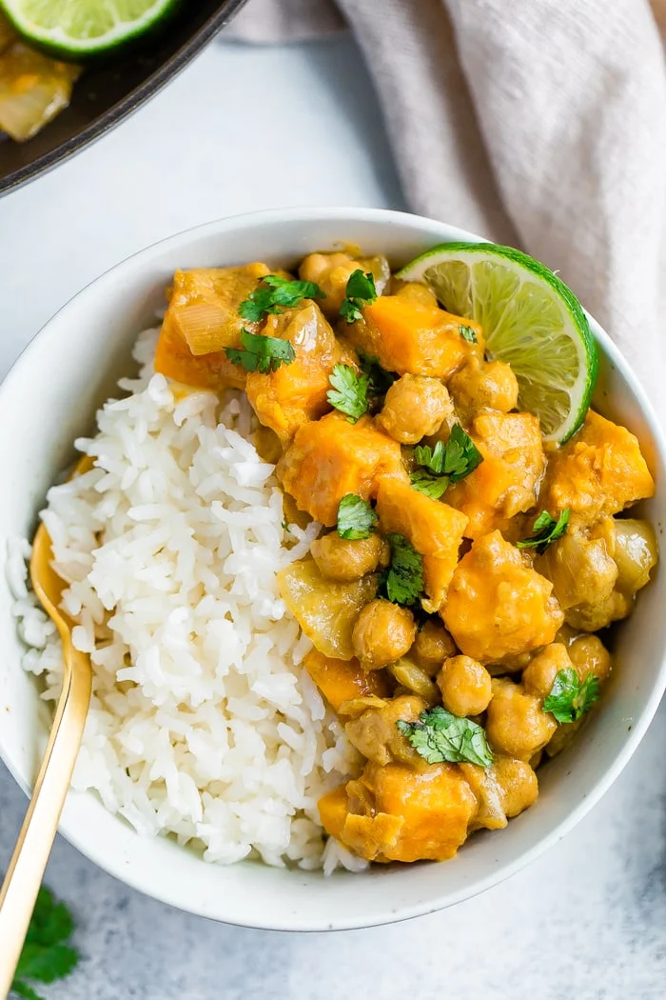

Simple Curry Dish

About This Dish
Yep, you read that correctly… this curry is a one pan meal and it comes together in less than 30 minutes, but tastes like it’s been cooking for much longer! For this recipe I stuck with basic, pantry staple ingredients you likely already have.
Ingredients
- yellow onion
- sweet potato
- curry paste (red or green curry paste will work)
- coconut milk
- chickpeas - I used canned chickpeas for ease
- rice
Steps
- Heat oil in a large skillet oer medium-high heat.
Add the onion to theskillet and cook, stirring
frequently, for about 5-6 minutes or until fragrant.
Add curry paste to the skillet, toss and saute for
another minute.
- Add sweet potatoes, chickpeas and coconut milk to the
skillet and stir to combine.
- Allow the sauce to heat up until it is simmering and
let simmer for about 10-15 minutes or until sweet
potatoes are tender enough to be easily pierced with
a fork. If the mixture gets too thick you can add
water to the pan, 1/4 cup at a time, up to 1/2 cup.
Taste and season with salt and pepper, if needed.
- Serve curry over rice with cilantro and a squeeze
of lime.